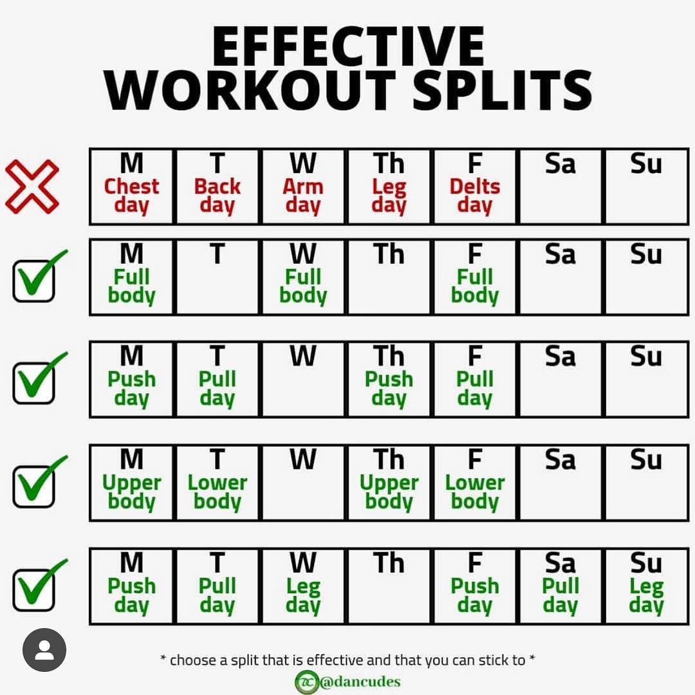

What is divisional motion?
분할을 하는 가장 큰 이유는, 근육에 자극을 더 많이, 크게 주기 위함이다. 근육이 발달되는 가장 기본 원리는 근육을 형성하는 근 섬유에 미세한 상처를 내고 이렇게 상처가 난 근육이 합성을 하는 과정에서 더 크고, 강하게 재결합을 하는 과정에서 근육이 발달하기 때문이다. 따라서 분할 운동을 하는 가장 큰 이유는 더 큰 자극을 집중해서 주고, 근육을 발달시키기 위함이라고 보면 된다. 하지만 분할 운동은 그 특성상 운동 중급자 이상이 되는 사람들에게 적극적으로 추천하는 방식이다.

대표적인 분할의 형태는 무분할, 2 분할, 3 분할, 4 분할, 5분할로 나뉠 수 있으며, 기본적인 루틴은 아래와 같이 진행하는 형태이다.
무분할 = 신체 부위를 나누지 않고 전신을 골고루 운동하는 형태
2 분할 = 상체/하체로 나누어 운동하는 형태
3 분할 = 대표적인 형태로는 가슴+팔 / 등+어깨 / 하체
4 분할 = 가슴 / 등 / 팔+어깨(소근육) / 하체로 나누어 진행
5 분할 = 가슴 / 등 / 팔 / 어깨 / 하체 형태로 분할
이외에도 복근만 훈련하는 날을 따로 빼는 형태도 가능하다만,
통상적으로 복근은 소근육이며 회복이 빠른 근육이라 각 분할 운동 마무리로 넣어서 진행하는 경우가 많다.

출처:구글이미지